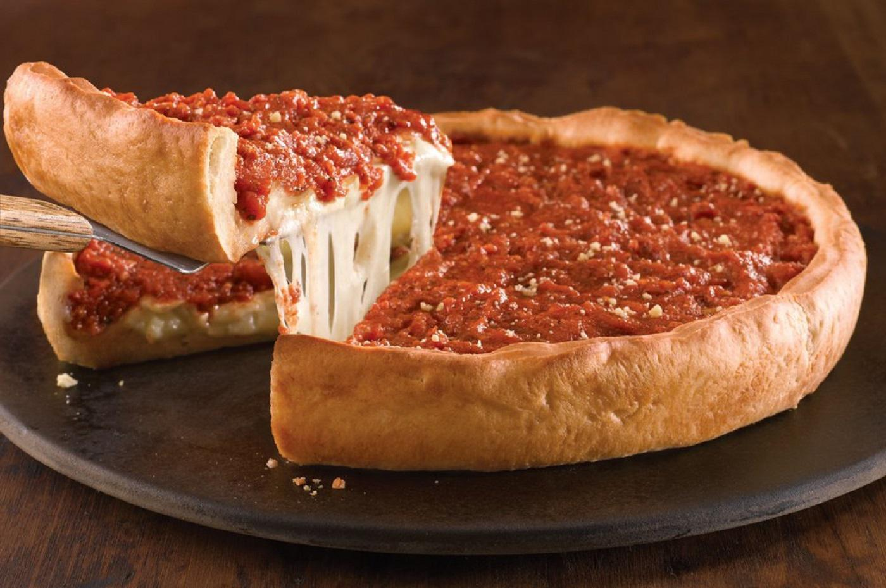

Chicago Deep Dish Pizza

The Chicago Deep Dish pizza is about as far as you can go away from a neapolitan pizza. This pizza features a
flaky, buttery thick crust and is topped heavy with ingredients. Deep Dish is popular in the city of Chicago,
where many restaurants downtown serve this giant pizza.
Ingredients
For the Dough
- Bread flour
- Semolina Flour
- Yeast
- Water
- Sugar
- Olive Oil
- Salt
- Clover Honey
- Butter
Toppings
- Canned Tomatoes
- Crushed Garlic
- Basil
- Parmesan Cheese
- Sliced Mozzarella
- Sliced Provolone
- Fire Roasted Bell Peppers
- White Onion
- Baby Spinach
Steps
- Combine flour and salt in a mixing bowl.
- In another bowl, mix warm water, honey and yeast.
- Lightly melt butter and combine with oil.
- Combine all three mixtures and knead into dough. Let rise for 2 hours in a warm place.
- Combine crushed tomatoes, garlic, chopped basil, sugar, and salt in a pan and simmer for up to 30 minutes.
- Add parmesan cheese and cool before using with pizza.
- In a large, well oiled, cast iron skillet, press pizza dough.
- Layer cheese, sauce, and toppings before putting in a hot oven.
- Let pizza cool for 30 minutes before cutting and serving.
Return to Home